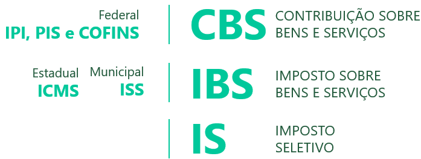
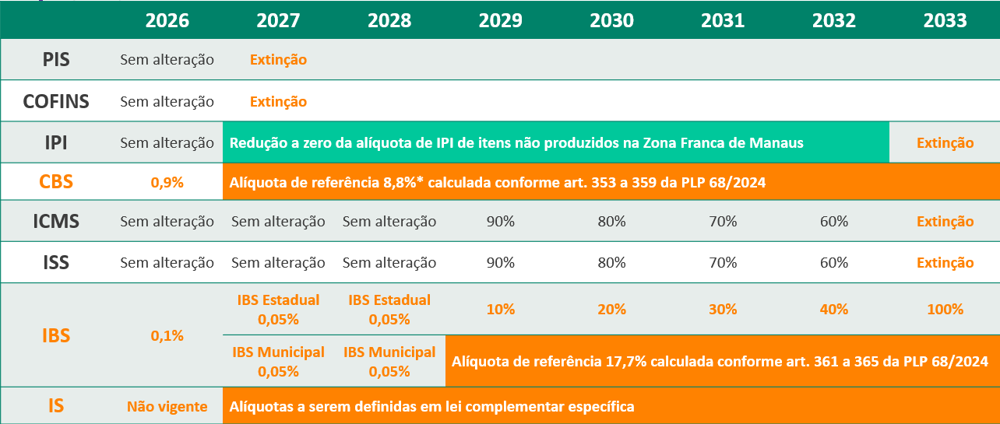

O Sistema Tributário Nacional Brasileiro atual é considerado um dos mais complexos do mundo, sua estrutura é mundialmente conhecida por ser extensa e possuir uma das mais altas cargas tributárias.
Os problemas apresentados vão mais adiante quando falamos do elevado número de tributos, normas e procedimentos que mudam constantemente e que impactam nas entregas das obrigações acessórias e principais. Existe uma série de conflitos entre estados e municípios e, ainda, uma grande insegurança jurídica em relação aos direitos e deveres das empresas, gerando inúmeros processos tributários na Justiça.
Este modelo tributário torna o país economicamente em desvantagem aos seus concorrentes, incerto para investimentos e gera impactos nos custos de produtos e serviços transferidos à população. A Reforma Tributária surge em função de um sistema mais simples, eficiente, transparente, com segurança jurídica e até mesmo crescimento econômico.
Nesta página, você verá os seguintes conteúdos:
Originária da PEC nº 45/2019, a reforma estabelece um novo modelo de tributação, consolidando a cobrança de diversos tributos federais, estaduais e municipais. A reforma introduz o modelo de Imposto sobre Valor Agregado (IVA), incidindo sobre o valor agregado em cada etapa da cadeia produtiva de um bem ou serviço. O IVA é reconhecido internacionalmente como o melhor modelo de tributação, utilizado em mais de 174 países reconhecidos pela ONU.
Com base nos estudos realizados pelo PAT RTC (Programa de Assessoramento Técnico à Implementação da Reforma da Tributação sobre o Consumo), foi encaminhado ao Congresso Nacional dois projetos de lei complementar para dar início à regulamentação da reforma tributária:
Essa medida será implementada gradualmente até 2033, com o objetivo de simplificar o sistema tributário, eliminar a concorrência desleal entre os estados e municípios e aumentar a transparência na relação entre o governo e os contribuintes.
Um dos pontos chaves da reforma é a unificação das regras entre os novos tributos criados. Isso significa que tanto o CBS quanto o IBS terão regras em comum em relação a fatos geradores; bases de cálculo; hipóteses de não incidência; imunidades; regimes específicos, diferenciados ou favorecidos de tributação; regras de não cumulatividade e creditamento.
A Emenda Constitucional trouxe a criação de 3 novos tributos para a legislação brasileira, são eles:

Irá substituir os atuais tributos PIS, COFINS e IPI, com destinação deste recolhimento à união. Art. 195, § V da EC nº 132.
O tributo incidirá sobre qualquer tipo de transação, seja ela envolvendo bens físicos (como produtos), bens intangíveis (como direitos autorais) ou serviços.
Também será cobrado sobre a importação de qualquer bem ou serviço, independentemente se quem está importando é uma empresa ou um indivíduo e qual o motivo da importação.
E não será cobrado sobre as exportações. Além disso, as empresas que exportam terão direito a manter os créditos fiscais que adquiriram em operações anteriores (como a compra de matéria-prima para produzir o produto exportado).
O sistema adotará o princípio da não cumulatividade, permitindo a compensação do tributo devido com o tributo incidente sobre todas as operações de aquisição de bens, materiais ou imateriais, inclusive direitos, com a única exceção para as aquisições consideradas de uso ou consumo pessoal, nos termos de Lei Complementar a ser editada pelo Congresso Nacional. Ou seja, o imposto incidirá somente sobre o valor que foi adicionado na etapa, e não sobre valores já tributados nas etapas anteriores.
A Emenda Constitucional ainda não estabeleceu uma alíquota específica para a CBS. A definição da alíquota caberá ao Senado Federal, após a aprovação de uma Lei Complementar. No entanto, foi instituído uma alíquota de referência, que limita o crescimento da arrecadação dos novos tributos. Esse limite foi calculado com base na arrecadação do PIS/Pasep, Cofins e IPI entre 2012 e 2021, em relação ao PIB.
A Receita Federal estima que a alíquota inicial da CBS seja de aproximadamente 8,8%, resultando em uma carga tributária total do IVA (Imposto sobre Valor Agregado) de 26,5%.
A base de cálculo do CBS é o valor da operação, que se refere ao valor integral cobrado pelo fornecedor a qualquer título.
Integram a base de cálculo do CBS:
Não integram a base de cálculo do CBS:
A Lei Complementar vai definir como usar os créditos de IPI, PIS/Pasep e Cofins que as empresas tiverem. Esses créditos poderão ser usados para pagar outros impostos federais, como a CBS, ou até mesmo ser devolvidos em dinheiro. Essa regra vale para todos os créditos, mesmo aqueles que ainda não foram utilizados.
Irá substituir os atuais impostos ICMS e ISS, com destinação deste recolhimento aos estados e municípios. Art. 156-A da EC nº 132.
O tributo incidirá sobre qualquer tipo de transação, seja ela envolvendo bens físicos (como produtos), bens intangíveis (como direitos autorais) ou serviços.
Também será cobrado sobre a importação de qualquer bem ou serviço, independentemente se quem está importando é uma empresa ou um indivíduo e qual o motivo da importação.
E não será cobrado sobre as exportações. Além disso, as empresas que exportam terão direito a manter os créditos fiscais que adquiriram em operações anteriores (como a compra de matéria-prima para produzir o produto exportado).
O sistema adotará o princípio da não cumulatividade, permitindo a compensação do tributo devido com o tributo incidente sobre todas as operações de aquisição de bens, materiais ou imateriais, inclusive direitos, com a única exceção para as aquisições consideradas de uso ou consumo pessoal, nos termos de Lei Complementar a ser editada pelo Congresso Nacional. Ou seja, o imposto incidirá somente sobre o valor que foi adicionado na etapa, e não sobre valores já tributados nas etapas anteriores.
A Emenda Constitucional ainda não estabeleceu uma alíquota específica para o IBS. A definição da alíquota caberá ao Senado Federal, após a aprovação de uma Lei Complementar. No entanto, foi instituído uma alíquota de referência, que limita o crescimento da arrecadação dos novos tributos. Esse limite foi calculado com base na arrecadação do ICMS e ISSQN entre 2012 e 2021, em relação ao PIB.
A Receita Federal estima que a alíquota inicial do IBS seja de aproximadamente 17,7%, resultando em uma carga tributária total do IVA (Imposto sobre Valor Agregado) de 26,5%.
A base de cálculo do IBS é o valor da operação, que se refere ao valor integral cobrado pelo fornecedor a qualquer título.
Integram a base de cálculo do IBS:
Não integram a base de cálculo do IBS:
O IBS adota o princípio do destino, determinando que a arrecadação do imposto seja atribuída ao estado ou município onde ocorre o consumo final do bem ou serviço. Assim, em uma operação interestadual, o IBS será devido ao estado do destinatário. A Constituição Federal, em seu artigo 156-A, § 5º, IV, prevê a possibilidade de definir o local da operação considerando diversos critérios, como o local da entrega, da disponibilização ou da localização do bem, bem como o domicílio ou a localização do adquirente ou destinatário.
A reforma tributária prevê um período de transição para as empresas que se beneficiam de incentivos fiscais do ICMS. O Fundo de Compensação, criado pela Emenda Constitucional nº 132/2023, tem como objetivo amortecer os impactos dessa transição, garantindo uma redução gradual dos benefícios até 2032. A medida visa promover uma maior equidade no sistema tributário e reduzir as desigualdades entre as empresas.
Os saldos credores de ICMS existentes em 31/12/2032 poderão ser utilizados ou transferidos para terceiros, nos termos de lei complementar. Para tanto, o contribuinte deverá requerer a homologação do crédito ao Estado. A homologação, que deverá ocorrer em prazo estabelecido em lei, é condição para a utilização ou transferência do saldo. A ausência de manifestação do Estado no prazo previsto implicará na homologação por um ato da autoridade do crédito.
Definido para desestimular o consumo de produtos prejudiciais à saúde e ao meio ambiente. Art. 155 § 6º e Art. 153 § VIII.
O Imposto Seletivo (IS) é aplicado sobre produtos que prejudicam a saúde e o meio ambiente, com o objetivo de desestimular seu consumo. Além de sua função arrecadatória, o IS possui natureza extrafiscal, atuando como um instrumento de política pública para a promoção da saúde e da proteção ambiental.
A reforma tributária permite ainda a cobrança de 1% do Imposto Seletivo na extração de recursos naturais não renováveis, como minérios e petróleo. A regulamentação do Imposto Seletivo poderá também diminuir ou zerar as alíquotas a algum tipo de produto específico, que serão determinadas por posterior lei ordinária.
O imposto não irá incidir nas exportações, nas operações com energia elétrica, telecomunicação, bem como de mercadorias ou serviços incentivadas com alíquotas reduzidas em 60% do IBS e CBS.
A instituição do Imposto Seletivo (IS) será formalizada por meio de lei complementar. O IS seguirá o regime não cumulativo, ou seja, não integrará sua própria base de cálculo. Dessa forma, o tributo será calculado sobre o valor final do produto ou serviço. Contudo, o valor do IS servirá como base de cálculo para outros impostos.
As alíquotas do IS serão fixadas por lei ordinária, podendo ser específicas, por unidade de medida adotada.
A Reforma Tributária já tem um plano de transição definido. A partir de 2026, inicia um período de testes com a cobrança de 0,9% de CBS e 0,1% de IBS, sendo neste período reduzida a alíquota do Cofins em 1%. Em 2027, a cobrança da CBS será plena e deixará de existir o PIS e Cofins, e o IPI começa a ter uma extinção parcial.
Entre 2029 e 2032 entra em cena o plano de transição para redução de 1/10 das alíquotas de ICMS e ISS, para compor a tributação do IBS. Esta mesma proporção de redução será aplicada aos benefícios e incentivos fiscais. E, a partir de 2033, teremos a extinção completa do ICMS, ISS e IPI, passando a vigorar apenas a CBS e o IBS.

*Alíquotas de referência a ser publicada pelo governo.
Agronegócio e Alimentos: Terão alíquota reduzidas, correspondente 40% da alíquota padrão para alimentos destinados ao consumo humano, insumos agropecuários e aquícolas, produtos agropecuários, aquícolas, pesqueiros, florestais e extrativistas vegetais in natura.
Cesta básica: A cesta básica contará com isenção tributária para os produtos mais consumidos pelas famílias de baixa renda. A PEC já define que produtos hortícolas, frutas e ovos terão alíquota zero e redução de 60% nas alíquotas para os demais itens.
Educação: Será aplicada uma redução de 60% nas alíquotas dos impostos incidentes sobre nove categorias de serviços, incluindo os serviços de educação infantil, fundamental e média.
Saúde: Estabelece a redução de 60% nos valores dos serviços de saúde, higiene e limpeza para a população de baixa renda. Dispositivos de acessibilidade e médicos terão valores ajustados, com isenção para determinados itens. Atividades esportivas e produtos de higiene menstrual terão também benefícios.
Medicamentos: Será concedida isenção tributária a 383 medicamentos, e os demais medicamentos terão suas alíquotas reduzidas em 60%.
Cultura: Redução de 60% para filmes, espetáculos teatrais e shows musicais
Profissões: Será aplicada uma redução de 30% nas alíquotas dos impostos incidentes sobre a prestação de serviços de 18 profissões intelectuais, dentre as quais se destacam advogados e contabilistas.
Automóveis: Isenção de impostos para automóveis destinados a pessoas com deficiência, indivíduos com transtorno do espectro autista e taxistas.
Imposto sobre veículos (IPVA)
Imposto sobre Transmissão e Doação de Bens (ITCMD)
Imposto Predial e Territorial Urbano (IPTU)
Os valores da CBS, IBS e IS serão todos calculados por fora, ou seja, o valor do produto ou serviço não possuirão estes valores, logo, o total do documento fiscal deve ser somado estes tributos ao valor da operação.
Todos os documentos fiscais com a Reforma Tributária sofrerão alterações para permitir informar as informações pertinentes aos novos tributos.
| Projeto Reforma Tributária do Consumo | ||
|---|---|---|
| Data: | Documento Fiscal: | Informe Técnico: |
| 01/08/2024 | NF-e e NFC-e | Informe Técnico nº 2024.001, versão 1.00 |
De acordo com a Emenda Constitucional nº 132/2023, ficará a cargo de lei complementar fixar os critérios para as obrigações tributárias acessórias, visando à sua simplificação. O Comitê Gestor, a administração tributária da União e a PGFN irão compartilhar informações fiscais relacionadas à CBS e ao IBS e atuarão para harmonizar as obrigações acessórias e procedimentos relativos a estes tributos.
A Reforma Tributária mantém o regime especial do Simples Nacional, garantindo às micro e pequenas empresas o tratamento tributário diferenciado previsto no art. 146 da Constituição Federal. Nesse sentido, as empresas optantes pelo Simples terão a opção de duas formas de tributação, a primeira apurando a CBS e o IBS “por dentro”, sob regime unificado, e a segunda apurando esses tributos “por fora” do regime do Simples Nacional.
A principal mudança é a limitação da transferência de créditos para os clientes, o que pode prejudicar a competitividade das MPEs, especialmente aquelas no início da cadeia produtiva. Isso ocorre porque, atualmente, as MPEs do Simples podem transferir integralmente os créditos do PIS/Pasep e da Cofins, o que não será mais possível com a nova regra.
A Reforma Tributária também traz como benefício para as empresas do Simples Nacional a redução significativa da incidência da substituição tributária, que atualmente representa um ônus adicional para essas empresas.
A fim de preservar o regime especial da Zona Franca de Manaus (ZFM), a Reforma Tributária estabelecerá mecanismos que garantam a manutenção do tratamento tributário favorecido aos bens produzidos na região. Tais mecanismos incluirão:
A Reforma ainda cria o Fundo de Sustentabilidade e Diversificação Econômica do Estado do Amazonas, financiado pela União, para fomentar o desenvolvimento e a diversificação de suas atividades econômicas.
O cashback é um mecanismo de devolução de parte do imposto pago, com foco em beneficiar as famílias de menor renda. Essa política fiscal, já adotada em outros países, busca tornar a tributação sobre o consumo mais justa, reduzindo o impacto dos impostos sobre os mais pobres.
No Brasil, o cashback poderá coexistir com a desoneração da cesta básica e ainda serão definidos detalhes como o perfil dos beneficiários, o valor máximo da devolução, a vinculação a determinados produtos e a forma de pagamento.
O split payment, ou “pagamento dividido” na tradução literal do inglês, é um sistema de arrecadação tributária no qual o valor devido de imposto é separado do valor da transação no momento do pagamento. Ao realizar uma compra, o valor do imposto é automaticamente destinado ao governo, sem a necessidade de o contribuinte se preocupar com o recolhimento.
Todas as informações, como o produto adquirido, o valor total e a forma de pagamento, serão automaticamente conectadas. O sistema calculará o valor do imposto a ser pago e o retirará diretamente do valor da transação, seja ela feita por PIX, cartão ou boleto. Essa integração garante mais transparência e agilidade no pagamento dos impostos, facilitando a vida do consumidor.
O split payment será fundamental para o ressarcimento rápido dos créditos tributários, além de evitar o duplo recolhimento do tributo. Essa forma de pagamento traz diversos benefícios, como a redução da burocracia, o combate à sonegação fiscal e o aumento da eficiência na arrecadação.
O Ministério da Fazenda estima uma redução de até três pontos percentuais na alíquota de referência da CBS e do IBS em consequência do fechamento das possibilidades de fraude, sonegação e inadimplência no país.
O Presidente da República sancionou, no dia 16 de janeiro de 2025, com vetos, o projeto nº 68/2024 convertida na Lei Complementar nº 214/2025. Na mesma data, foi publicado o Despacho do Presidente da República nº 88/2025, informando os veto de alguns dispositivos, sob a alegação de inconstitucionalidade ao interesse público, correndo agora no Congresso Nacional. Confira os principais pontos: